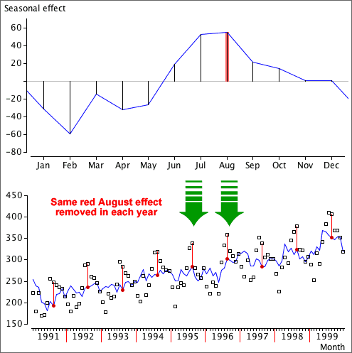

Removing the seasonal effect
Having estimated a common seasonal effect that describes how far each month's value is (on average) from the overall trend, we can subtract this seasonal effect to obtain deseasonalised data. This is often called seasonally adjusting the data.

The time series can be deseasonalised in this way for all years (including the most recent data).
The deseasonalised data not only shows the trend in the series more clearly, but also shows individual months that are substantially different from the usual seasonal pattern.